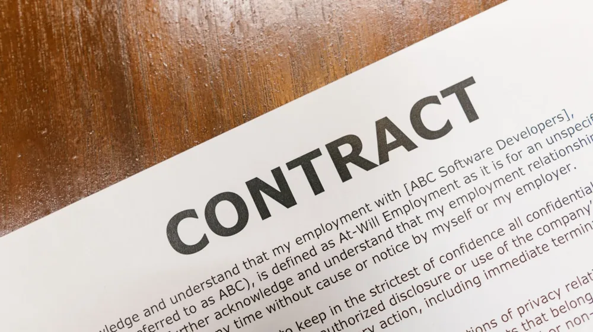

암보험 가입 전 '이것' 모르면 손해봅니다! 필수 체크리스트 4가지
사진: SHVETS production / Pexels (무료 이미지, 출처 표기)
암보험은 한 번 가입하면 수십 년간 유지해야 하는 중요한 금융 상품입니다. 하지만 많은 이들이 보장 금액만 보고 덜컥 가입했다가 정작 아플 때 제대로 된 보장을 받지 못해 후회하곤 합니다. 가입 전 반드시 확인해야 할 4가지 핵심 요소를 정리해 드립니다.
1. 가장 먼저 확인해야 할 면책기간과 감액기간

암보험에 가입했다고 해서 다음 날 바로 보장을 받을 수 있는 것은 아닙니다. 보험사들은 가입 직후 발병 사실을 숨기고 보험금을 청구하는 역선택을 막기 위해 두 가지 안전장치를 두고 있습니다.
- 면책기간: 가입일로부터 보통 90일 동안은 암 진단을 받아도 보험금을 단 한 푼도 지급하지 않는 기간을 뜻합니다.
- 감액기간: 면책기간이 지난 후에도 보통 1~2년 이내에 암 진단을 받으면 계약된 보장 금액의 50%만 지급하는 기간입니다.
금융감독원 공시 자료에 따르면, 생명보험사와 손해보험사의 면책 조건과 감액 비율이 상품마다 다를 수 있습니다. 젊고 건강할 때 미리 준비해야 하는 이유가 바로 이 공백기 때문입니다.
2. 일반암 vs 소액암·유사암, 보장 범위 비교
암이라고 해서 다 같은 금액을 주는 것이 아닙니다. 보험사는 암의 종류를 일반암, 소액암, 유사암(갑상선암, 제자리암, 경계성종양 등)으로 분류하여 지급 비율을 다르게 책정합니다.
간혹 특정 보험사에서는 유방암이나 남녀생식기암을 소액암이 아닌 일반암으로 분류하여 100% 보장하기도 합니다. 따라서 가입하려는 상품이 어떤 암을 '일반암'으로 인정하는지 약관을 꼼꼼히 대조해보는 것이 유리합니다.
3. 갱신형 vs 비갱신형, 나에게 맞는 유리한 선택
보험료를 내는 방식은 크게 두 가지로 나뉩니다. 초기 비용이 저렴한 갱신형과 평생 보험료가 고정되는 비갱신형입니다. 어떤 방식이 무조건 좋다고 단정할 수 없으며 본인의 연령과 자금 계획에 맞게 골라야 합니다.
갱신형은 초기 보험료가 매우 저렴하지만 일정 주기마다 연령과 위험률을 반영해 보험료가 계속 오릅니다. 보장받는 만기 시점까지 평생 납입해야 하므로 고연령층의 단기 보장용으로 적합합니다.
반면 비갱신형은 초기 보험료가 다소 높지만 납입 기간(예: 20년 납) 동안 동일한 금액만 내면 만기(예: 100세 만기)까지 추가 납부 없이 보장받을 수 있습니다. 사회초년생이나 경제 활동이 왕성한 시기에 납부를 끝내고 싶다면 비갱신형이 현명한 선택입니다.
4. 알릴 의무(고지의무) 위반 시 불이익 주의
계약 전 알릴 의무(고지의무, 가입 전 과거 질병 이력이나 수술 여부를 보험사에 알릴 의무)는 계약의 성패를 가르는 가장 중요한 절차입니다. 최근 5년 이내의 수술, 입원, 7일 이상 치료, 30일 이상 투약 사실 등은 반드시 정직하게 적어야 합니다.
이를 가볍게 여겨 누락하거나 거짓으로 작성할 경우, 나중에 암에 걸려도 보험금 지급이 거절되거나 보험 계약 자체가 일방적으로 해지될 수 있습니다. 설계사의 "이 정도는 안 적어도 된다"는 말만 믿지 말고 본인이 직접 꼼꼼히 작성해야 안전합니다.
본 정보는 2026년 기준 작성되었으며, 보험 상품의 세부 약관과 이율은 가입 시점 및 보험사 규정에 따라 수시로 변동될 수 있습니다. 가입 결정 전에 금융감독원 파인 사이트나 해당 보험회사의 공식 상품설명서를 반드시 다시 한번 확인하시기 바랍니다.
🔗 이 글도 함께 보면 좋아요: 신용대출 vs 담보대출 차이 비교: 한도와 금리 결정하는 3가지 핵심
관련 추천 상품
이 포스팅은 쿠팡 파트너스 활동의 일환으로, 이에 따른 일정액의 수수료를 제공받습니다.
자주 묻는 질문(FAQ) (탭하면 펼쳐져요)
Q1. 암보험 가입 후 바로 보장받을 수 있나요?
A. 아니요, 가입일로부터 보통 90일 동안은 암 진단이 나와도 보장받지 못하는 '면책기간'이 적용되며, 1~2년 이내에는 50%만 지급하는 '감액기간'이 있습니다.
Q2. 갱신형과 비갱신형 중 무엇이 더 유리한가요?
A. 나이와 자금 계획에 따라 다릅니다. 젊은 층은 총액 예측이 가능하고 만기까지 추가 납입이 없는 '비갱신형'이 유리하며, 고연령층은 초기 보험료 부담을 낮추고 단기 보장을 챙기는 '갱신형'이 더 알맞을 수 있습니다.